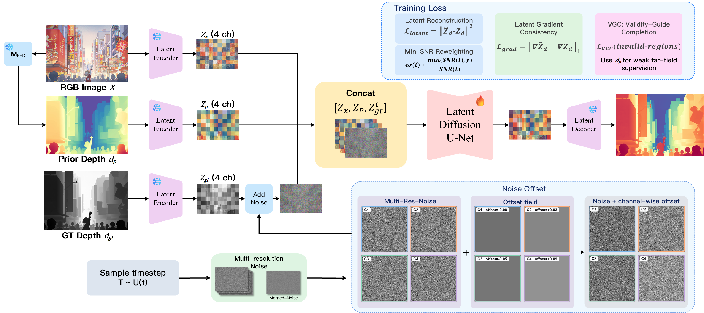

Sky-Collapse Analysis
Identifies finite, locally distorted, and pseudo-textured sky depth as a recurring failure mode in diffusion-based monocular depth models.
aSchool of Computer Science and Engineering, Shenyang Jianzhu University
bSchool of Chinese Medicine, Beijing University of Chinese Medicine
cShenyang Branch of the National Special Computer Engineering Technology Research Center
dInfiniFlow (Shanghai) Information Technology Co., Ltd.
Abstract—Diffusion-based monocular depth estimation methods have shown strong generalization ability through generative priors and iterative denoising. However, they often suffer from sky-depth collapse in outdoor scenes, where sky regions that should be distant and smooth are incorrectly estimated as finite, distorted, or affected by pseudo-texture artifacts. This issue also appears in our previous ApDepth framework and is common in diffusion-based depth models due to the ambiguity of textureless and cloud-textured regions. To address this problem, we propose ApDepth-G, a multi-step geometric diffusion refinement framework for sky-stable monocular depth estimation. ApDepth-G progressively refines latent depth representations through multi-step denoising and improves training with offset noise regularization, SNR-based loss reweighting, and latent gradient consistency. In addition, sky-aware refinement is introduced to suppress unreliable sky-region responses and reduce pseudo-depth structures. Experimental observations show that ApDepth-G effectively alleviates sky-depth collapse in challenging outdoor scenes while maintaining robust depth estimation performance.
Index Terms—Diffusion model, monocular depth estimation, sky collapse, depth refinement, geometric diffusion.

Identifies finite, locally distorted, and pseudo-textured sky depth as a recurring failure mode in diffusion-based monocular depth models.
Restores a multi-step, depth-prior-guided reverse trajectory that progressively corrects uncertain latent geometry in sky and long-range regions.
Combines offset-noise regularization, SNR-based loss reweighting, latent gradient consistency, and sky-aware refinement.

| Type | Method | Training Data | NYUv2 | KITTI | ETH3D | ScanNet | DIODE | |||||
|---|---|---|---|---|---|---|---|---|---|---|---|---|
| AbsRel↓ | δ1↑ | AbsRel↓ | δ1↑ | AbsRel↓ | δ1↑ | AbsRel↓ | δ1↑ | AbsRel↓ | δ1↑ | |||
| Discriminative | DiverseDepth | 320K | 11.7 | 87.5 | 19.0 | 70.4 | 22.8 | 69.4 | 10.9 | 88.2 | – | – |
| MiDaS | 2M | 11.1 | 88.5 | 23.6 | 63.0 | 18.4 | 75.2 | 12.1 | 84.6 | – | – | |
| LeReS | 354K | 9.0 | 91.6 | 14.9 | 78.4 | 17.1 | 77.7 | 9.1 | 91.7 | – | – | |
| Omnidata | 12.2M | 7.4 | 94.5 | 14.9 | 83.5 | 16.6 | 77.8 | 7.5 | 93.6 | – | – | |
| HDN | 300K | 6.9 | 94.8 | 11.5 | 86.7 | 12.1 | 83.3 | 8.0 | 93.9 | – | – | |
| DPT | 1.4M | 9.8 | 90.3 | 10.0 | 90.1 | 7.8 | 94.6 | 8.2 | 93.4 | – | – | |
| Depth Anything V2 | 63.5M | 4.3 | 98.0 | 8.0 | 94.6 | 6.2 | 98.0 | 4.3 | 98.1 | 6.6 | 95.2 | |
| Generative | Marigold | 74K | 5.5 | 96.4 | 9.9 | 91.6 | 6.5 | 96.0 | 6.4 | 95.1 | 10.0 | 90.7 |
| GeoWizard | 280K | 5.2 | 96.6 | 9.7 | 92.1 | 6.4 | 96.1 | 6.1 | 95.3 | 12.0 | 89.8 | |
| DepthFM | 74K | 6.0 | 95.5 | 9.1 | 90.2 | 6.5 | 95.4 | 6.6 | 94.9 | – | – | |
| GenPercept | 90K | 5.6 | 96.0 | 9.9 | 90.4 | 6.2 | 95.8 | 5.6 | 96.5 | – | – | |
| Lotus | 54K | 5.3 | 96.7 | 8.5 | 92.8 | 5.9 | 97.0 | 5.9 | 95.7 | 9.8 | 92.4 | |
| DepthMaster | 74K | 5.0 | 97.2 | 8.2 | 93.7 | 5.3 | 97.4 | 5.5 | 96.7 | – | – | |
| ApDepth (Ours) | 74K | 4.5 | 97.3 | 8.7 | 93.7 | 5.6 | 96.3 | 4.5 | 97.3 | 8.3 | 93.2 | |
| ApDepth-G (Ours) | 74K | 4.5 | 97.2 | 8.0 | 94.4 | 5.1 | 96.9 | 4.5 | 97.3 | 7.8 | 94.2 | |